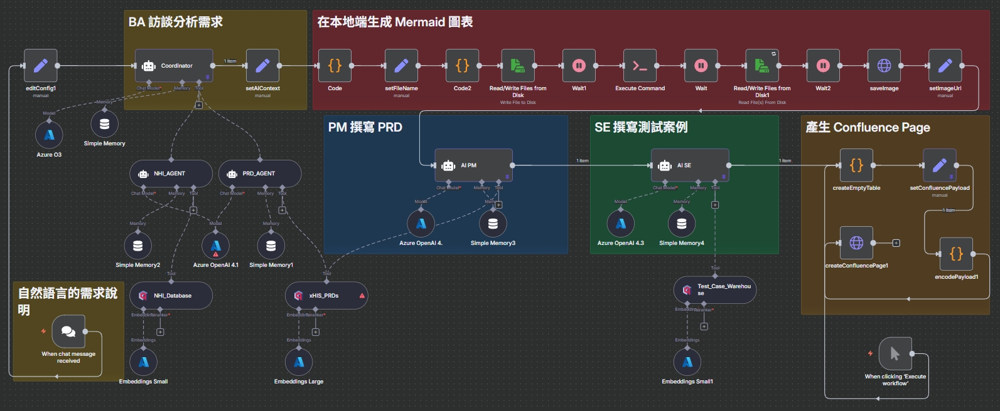
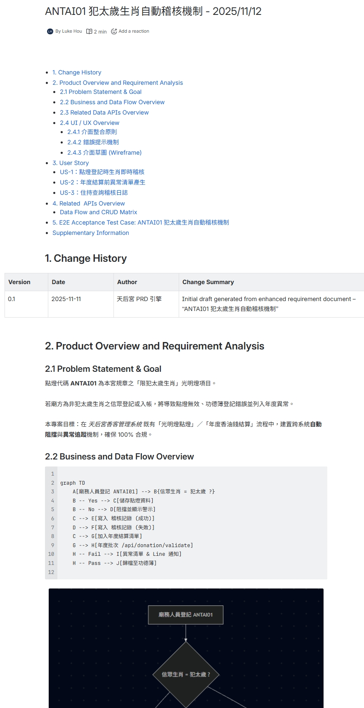
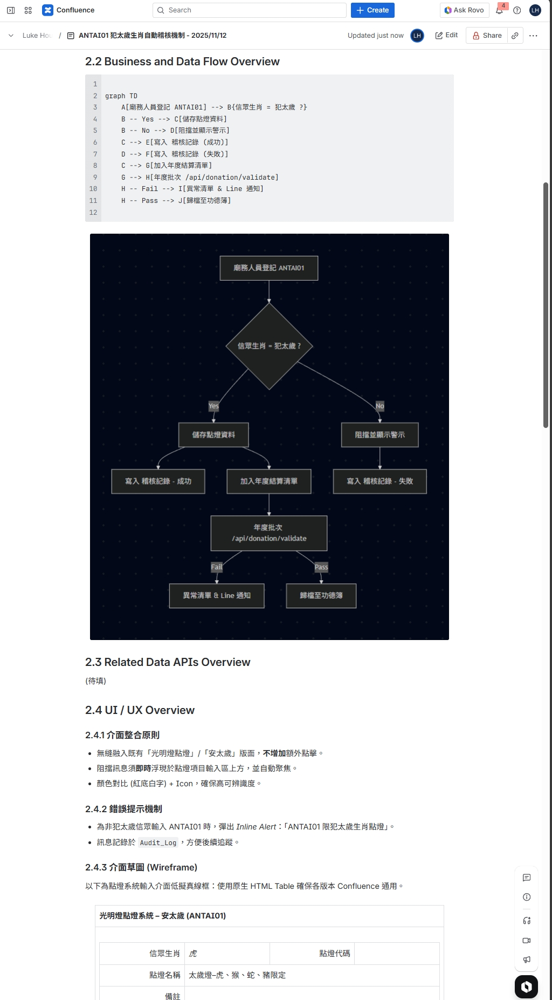
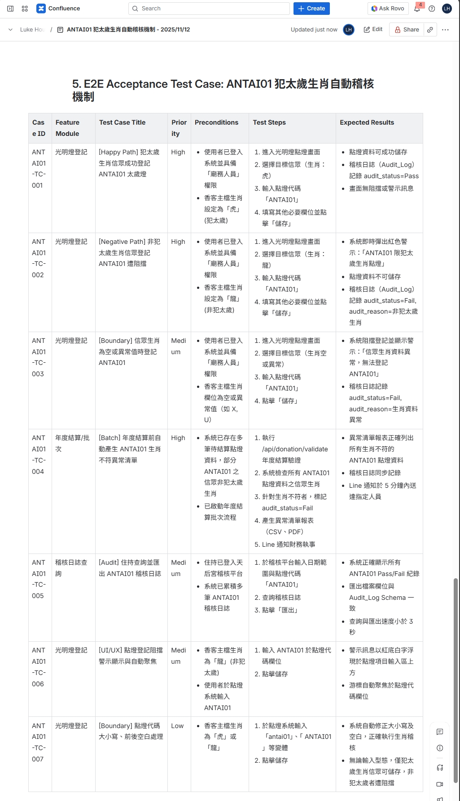

從一句話到 PRD 初稿：AI 規格書怪獸
看如何打造一個多代理 AI 自動化系統，在幾分鐘內快速生成 PRD 初稿，將靜態的組織知識庫轉化為可驅動創新活用的動態資產。
The Challenge
「撰寫 PRD 是一項高重複性卻不容出錯的工作。將業務需求轉化為技術規格時，常因溝通落差導致規格模糊；且為了符合法規與內部標準，PM 往往需花費大量時間查閱歷史文件，導致核心價值——『產品策略思考』的時間被嚴重壓縮。」
The Solution
「我構建了一個『AI 虛擬產品團隊』。透過 n8n 串接多個 AI Agent，分別扮演架構師、法規顧問與 QA。系統能自動檢索內部知識庫 (RAG)，將一句話需求擴寫成包含使用者故事、驗收標準甚至測試案例的完整 PRD，確保規格一致性並節省 80% 的撰寫時間。」
痛點：知識工作的「隱形成本」
在任何成熟的軟體公司，撰寫一份高品質的產品需求文件（PRD）都充滿挑戰，這些挑戰構成了巨大的「隱形成本」。
合規的複雜性
尤其在醫療領域，產品功能必須嚴格遵守健保法規，任何疏忽都可能導致開發資源的巨大浪費。
知識的壁壘
PM 需要花費大量時間消化歷史文件，以確保新舊功能的一致性，這極大地拖慢了創新速度。
時間的瓶頸
從需求分析到測試案例設計，整個流程高度依賴人工，不僅耗時，且產出品質參差不齊。
核心優勢：符合企業級資安的混合式 AI 架構
在導入 AI 解決方案時，資訊安全是企業最關心的議題。此系統的架構核心即是為了解決此問題而設計，它透過「本地知識」與「私有AI」的結合，打造了一個堅不可摧的資安壁壘：
- 智慧資產不外流： 包含部門累積的 PRD 庫、醫療法規細則、測試案例等核心智慧資產，全部被向量化後儲存在本地的 Qdrant 向量資料庫中。這確保了公司的知識庫完全處於內部的保護之下，最小化外洩風險。
- 對話與生成內容的絕對隱私： 所有與 AI 的互動，包括使用者輸入的商業需求和 AI 生成的 PRD 內容，都只在公司私有的 Azure OpenAI 服務節點中進行處理。這與使用公開的 AI 服務有本質區別，能確保商業機密與未來產品路線圖的絕對安全。
這個架構讓企業在擁抱 AI 帶來效率革命的同時，無需在資訊安全上做任何妥協。它不僅保護了現有的智慧財產，更為未來的 AI 應用奠定了最穩固、最值得信賴的基石。
解決方案：打造一個「AI 數位產品團隊」
我們並非用 AI 取代人類，而是建立一個由 AI 驅動的「數位化專家團隊」。透過 n8n 平台，我設計了一個多代理（Multi-Agent）系統，模擬真實世界中最高效的產品規格書協作模式。
AI 代理的數位化分工
這就是 AI 團隊的大腦。從一個聊天視窗接收自然語言需求開始，串連起四個各司其職的 AI 代理，每個代理都擁有獨立的知識庫（RAG），分別扮演 BA、PM、使用者故事專家與 QA 工程師，最終將一份完整的 PRD 自動發布到 Confluence。
從一句話到完整文件
AI 團隊自動將單一需求擴寫成一份包含多個章節的專業 PRD 文件，格式工整，內容詳盡，可直接交付工程團隊。(點擊放大查看)
Part 1: 目錄
Part 2: 流程圖及UI需求
Part 3: E2E 測試案例
影響：創造可量化的商業價值
此系統不僅是效率工具，更是企業的策略性資產，帶來了實質的商業效益。
加速功能落地
40%
數分鐘就可以產生一份中規中矩的 PRD 初稿，讓 PM 能更快啟動後續的撰寫及優化，規格交付速度預計提升 40%。
活化知識資產
70%
將靜態文件轉化為 AI 可用的動態知識庫，新進員工的上手時間預計縮短 70%，並賦能資深員工專注於更高價值的創新工作。
智慧成本控制
30%+
透過針對不同任務選用最適合的 LLM 模型（如 GPT O3 負責深度分析，GPT 4.1 負責快速生成），有效平衡 AI 運營成本與產出品質，預計可節省 30% 以上的 API 費用。
我的角色與貢獻
- 商業痛點洞察: 敏銳地識別出知識工作流程中的效率瓶頸，並將其定義為一個可透過 AI 與自動化解決的商業問題。
- AI 系統架構設計: 提出「多代理 + 混合式 RAG」的創新架構，為每個 AI 代理賦予特定角色和專屬知識庫，實現專業化分工。
- 端到端流程建構: 獨立完成整個自動化系統的開發、整合與部署，串連 n8n、Multi Agent、Qdrant 與 Confluence API。
- 價值導向思維: 始終從「為企業創造可量化價值」的角度出發，專注於解決方案能否帶來實際的效率提升、風險降低與知識傳承。